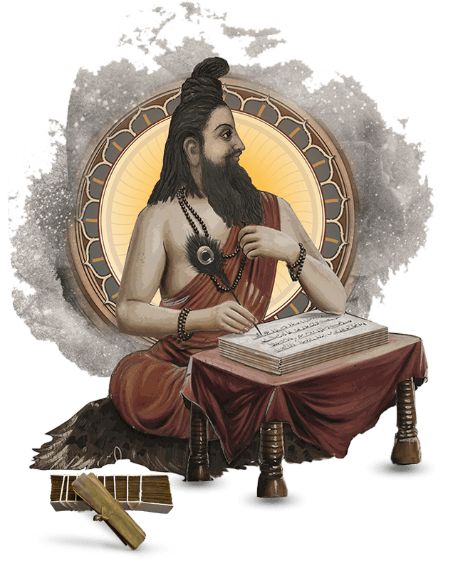
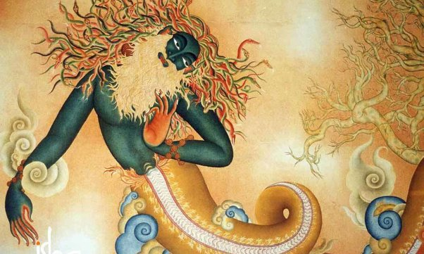

2nd century BCE to 4th century CE
“If you still think your life will become better with a new house, a new girlfriend, a new car, more money, or whatever else, it is not yet time for yoga.” If you saw all that and you realized that it does not fulfill your life in any way: “…and now, Yoga.”
Patanjali was not only a man of many talents who wrote texts on medicine, language, and grammar, he was one of the 18 classical Tamil siddhars (sages and intellectuals), and a realized being. But he is probably most widely known as the “father of modern yoga” – not because he originated yoga, but because he distilled the essence of yoga into the famous Yoga Sutras. He also delves into the first two sutras, disclosing the background of the cryptic Sanskrit words that form the verses.
The Yoga Sutras of Patañjali is a collection of Sanskrit sutras on the theory and practice of yoga – 195 sutras (according to Vyāsa and Krishnamacharya) and 196 sutras (according to others, including BKS Iyengar). The Yoga Sutras was compiled in the early centuries CE, by the sage Patanjali in India who synthesized and organized knowledge about yoga from much older traditions. The Yoga Sutras is best known for its reference to ashtanga, eight elements of practice culminating in samadhi. The eight elements are yama (abstinences), niyama (observances), asana (yoga postures), pranayama (breath control), pratyahara (withdrawal of the senses), dharana (concentration of the mind), dhyana (meditation) and samadhi (absorption). The main aim of practice is kaivalya, discernment of purusha, the witness-consciousness, as distinct from prakriti, the cognitive apparatus, and disentanglement of purusha from prakriti's muddled defilements.